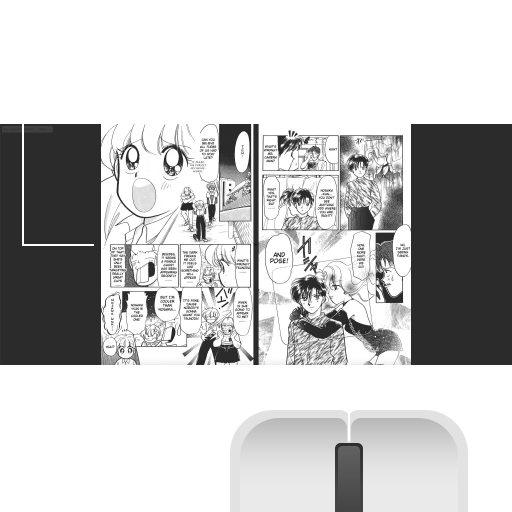

More  Return to series page
You are currently reading chapter #??, page #??.
Jump to chapter: page:
More features may come! Suggestions welcome.
Return to series page
You are currently reading chapter #??, page #??.
Jump to chapter: page:
More features may come! Suggestions welcome.
Return to series page
You are currently reading chapter #??, page #??.
Jump to chapter: page:
More features may come! Suggestions welcome.
Reader Controls!
Using the My Future Translations manga reader, you have two options for control methods.Arrow Key Controls

Arrow key controls are laid out like a 2D mayrio game.
Mouse Controls

Mouse controls are laid out similarly to that of MangaDex, but flipped, and with the bonus feature of fast page seeking with the scroll wheel.